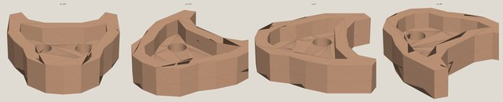
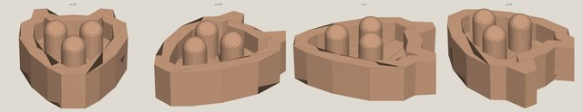
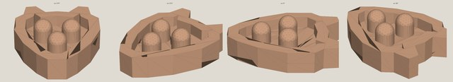
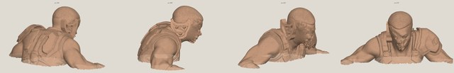
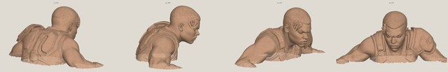

Head Jack Round 3 — parallel authored candidates
📖 Round runbook →One checksum-pinned comparison of PR #74 and PR #78 after separating source self-assessments from coordinator-owned round state.
Verdict needed now
Choose the exact geometry direction to retain. The physical test is explicitly deferred, and the rendered recommendation is not a promotion.
- Which exact Round 3 candidate should be retained for later development?Dimitri + Jason
Candidate B at 2.0 mm is recommended from the rendered evidence: it has the strongest balanced wolf/three-pin read and clean seating. Its 0.44 mm pins and 0.26 mm rim remain unproven physically, so selection now only preserves a direction and exact checksum for future work.
- Retain Candidate B · 2.0 mm — recommended; fused checksum 22fa3e9f…08b6 and master checksum a545937f…ceed.
- Retain Candidate B · 1.5 mm — subtler; fused checksum 3bb8382c…19f and master checksum ddd2a594…22e0.
- Select Candidate A only as an explicit visual-overturn — explain what the live mesh disproves about its oversized/projected render.
- Reject all — give precise size, contact-gender, seating, or silhouette feedback for the next numbered runbook.
Common mechanical gate
| Artifact | SHA-256 | Topology | Master footprint | Mace preservation |
|---|---|---|---|---|
| Candidate A · recessed ports | de60ec5e…71c7 | PASS · one watertight winding-consistent fused shell · Euler −2 from open port handles | 3.60 × 3.75 mm | 37 mm height and 27.073 × 25.425 mm footprint retained |
| Candidate B · 1.5 mm raised pins | 3bb8382c…19f | PASS · one watertight winding-consistent fused shell · Euler 0 | 1.50 × 1.96 mm | 37 mm height and footprint retained |
| Candidate B · 2.0 mm raised pins | 22fa3e9f…08b6 | PASS · one watertight winding-consistent fused shell · Euler 0 | 2.00 × 2.61 mm | 37 mm height and footprint retained |
Matched authored-master comparison
Same renderer, clay color, lighting, four cameras, crop behavior, and resolution. These views show contact gender and structural proportions; the on-head set below shows actual scale.



Matched on-head comparison
Same Mace m2 source checksum, z crop, renderer, lighting, cameras, and output resolution. The fresh-context audit judged proportion, seating, contact count, and visible damage from these exact images.


Provenance and design-envelope differences
exact source heads, current binaries, and deviations
Candidate A: PR #74 at 9a5369f0ce3d7cf24f05083f8b859d072df011de; fused SHA-256 de60ec5ec59beccb4145affaf07f1f7e7eb7abbc135b38ee39897a503bc971c7. Candidate B: PR #78 at b583efbde65602e333443029ab1ab9c606d007c9; 1.5 mm fused SHA-256 3bb8382cd41b4132963c46937ed09f58ed7acffd694b86e655c4ba39f519419f; 2.0 mm fused SHA-256 22fa3e9fe5c268db99d211de745de2a36741f5a7cb6d65889f964124e73208b6. Both used Mace instead of the runbook's recommended/sign-off-requested Gorgon. A dropped collars. B also changed female holes to male raised pins and reduced the r2 held size. The frozen runbook is not retroactively rewritten.
After the verdict
Selection, future physical verification, promotion, and source-PR closure remain separate append-only events.
- Append the checksum-pinned human selectionon review
Add a new reviews.json record; do not rewrite source self-assessments or coordinator audits.
- Hold the physical gateuntil explicitly ready
Do not schedule a test print yet. Preserve the selected exact binary on Drive and carry print/paint/handling validation into the next readiness round.
- Do not promote from renders aloneafter visual selection
Keep Round 3 open and the selected checksum provisional. Promotion still requires a later explicit physical-validation decision.
- Close source PRs as superseded evidenceafter reconciliation lands
Retain PR #74 and PR #78 heads as immutable provenance rather than merging their competing shared round state.